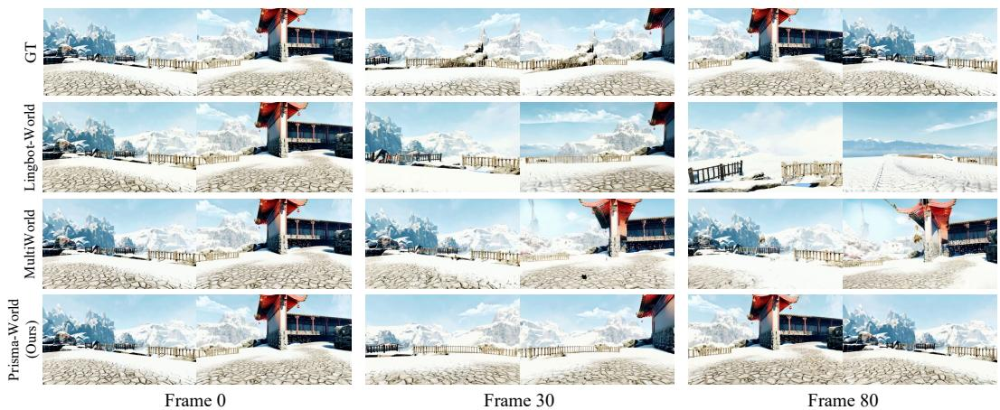

先说结论。多视角一致性是通用视觉世界模型绕不开的问题，Prisma-World 提供了一个结构化 attention/geometry 注入方案。 把单观察者 video world model 扩展到多观察者一致生成，强调共享几何和跨视角一致性。
Figureure 2 · : Method overviewFigure 2: Method overview. Prisma-World generates multi-agent videos within a single joint denoising process. Our MA-RoPE keeps frames at the same time step aligned across agents while distinguishing tokens from different agents. The minimap branch provides local spatial guidance by projecting each agent position onto a top-down minimap and injecting the extracted layout feature into the corresponding agent tokens.这张图概括 Prisma-World 的整体方法流程。阅读时先看模块之间传递的训练信号，再看作者如何把目标拆成可优化的子问题。

Figureure 3 · : Qualitative comparisonFigure 3: Qualitative comparison. Compared to other baselines, our model can synthesize highquality multi-agent videos with precise camera control while preserving multi-view consistency.这张图/表用于判断 Prisma-World 的实验收益来自哪里。重点看替换、消融或跨模型设置下趋势是否一致，而不是只看单个最高分。